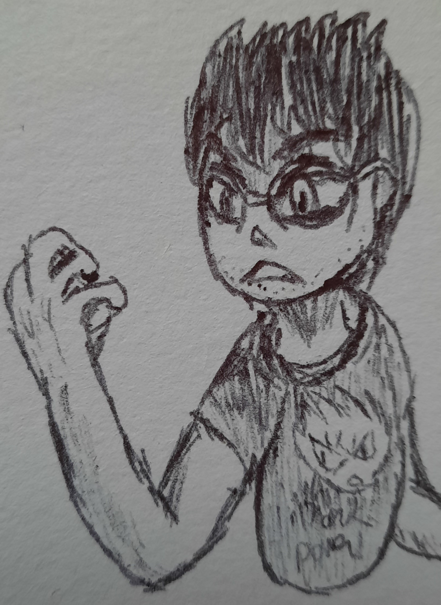

Este es Mario, el creador de Orima. Se comunica en redes sociales gracias a su propia creación, su objetivo es buscar gente para cumplir su sueño; De hacer videojuegos en equipo. Empezó a dibujar a los 12 años, y fue a los 14 que empezó a desarrollar su videojuego, en 2 cuardernos
